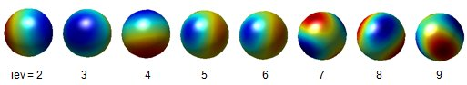

BEM Solvers
BEM solvers are at the heart of the MNPBEM toolbox. They compute the surface charges for given external excitations. In turn, the surface charges can be used for computing scattering cross sections, dipole scattering rates, EELS maps or electric field maps.
Contents
Initialization
% initialize BEM solver with COMPARTICLE object P bem = bemsolver( p, op ); % pass additional arguments to BEM solver bem = bemsolver( p, op, PropertyName, PropertyValue );
bemsolver is a wrapper function that selects one of several BEM solvers. Which solver is called depends on the setting of the following option fields or property names (property names overrule option fields)
- 'sim' selects between quasistatic ('stat') or retarded ('ret') solvers, the latter providing solutions for the full Maxwell equations.
- 'nev' sets the number of eigenmodes for quasistatic solvers with an eigenmode expansion.
- 'layer' selects a solver for substrates or layer structures.
- 'sym' selects a solver for mirror symmetry.
- 'iter' selects an iterative solver.
The solvers are selected as follows (x means field is set, - means field is absent)
BEM solver sim nev layer sym iter
bemstat 'stat' - - - - bemstateig 'stat' x - - - bemstatlayer 'stat' - x - - bemstatmirror 'stat' - - x - bemstateigmirror 'stat' x - x - bemstatiter 'stat' - - - x bemret 'ret' - - - - bemretlayer 'ret' - x - - bemretmirror 'ret' - - x - bemretiter 'ret' - - - x bemretlayeriter 'ret' - x - x
The performance of the BEM solvers is additionally determined by the following parameters, which are described in more detail in the section on particle integration
- 'RelCutoff' and 'AbsCutoff' determine the boundary elements over which a refined integration is performed.
- 'interp' selects between flat and curved particle boundaries.
- 'npol' and 'refine' determine the number of integration points for diagonal and off-diagonal elements of the Green function, respectively.
- 'order' gives the degree of the Taylor expansion for the exponential factor of the retarded Green function.
- 'waitbar' controls whether the progress of the Green function initialization is shown or not.
Methods
Once the BEM solver is initialized, one can compute the surface charges for some external potentials pot
% POT is a COMPSTRUCT object with fields % - PHIP for quasistatic % - PHI1, PHI1P, A1, A1P, PHI2, PHI2P, A2, A2P for retarded simulations % fields that are zero can be omitted % compute surface charge sig = bem \ pot;
Alternatively one can also first compute the resolvent matrices for the solution of the BEM equations, and compute the surface charges next
% compute resolvent matrices bem = bem( enei ); % compute surface charges sig = bem \ pot;
The latter calling sequence is better when bem is subsequently called again, for instance to compute electromagnetic fields or to obtain surface charges for different excitations. In most cases the computation of the resolvent matrices will consume most of the computer time.
Once the surface charges are computed, one can submit sig to the plane wave, dipole, or EELS excitation classes, or one can compute electromagnetic fields or potentials at the particle boundary
% electromagnetic fields f = field( bem, sig ); % potentials pot = potential( bem, sig );
The above calling sequences return the fields and potentials at the boundary outsides. To obtain fields at the boundary insides one should call f=field(bem,sig,1), with a corresponding calling sequence for potentials.
Examples
Compute and plot surface charges. In the first example we show how to set up a BEM solver for the solution of the full Maxwell equations and how to solve it for a plane wave excitation. You can inspect the fields of the surface charges by typing sig at the Matlab prompt.
% BEM options op = bemoptions( 'sim', 'ret' ); % metallic nanosphere p = comparticle( { epsconst( 1 ), epstable( 'gold.dat' ) }, { trisphere( 144, 10 ) }, [ 2, 1 ], 1, op ); % plane wave excitation exc = planewave( [ 1, 0, 0 ], [ 0, 0, 1 ], op ); % initialize BEM solver bem = bemsolver( p, op ); % surface charge for plane wave excitation with wavelength of 500 nm sig = bem \ exc( p, 500 ); % plot surface charge SIG2 at particle outside plot( p, sig.sig2 );
Quasistatic eigenmode expansion. To compute surface charges with a quasistatic BEM solver with eigenmode expansion, we proceed as shown below. To page through the different eigenmodes, use the green arrows in the task bar on top of the figure
% options for quasistatic BEM solver with eigenmode expansion % NEV controls the number of eigenmodes op = bemoptions( 'sim', 'stat', 'nev', 20 ); % metallic nanosphere p = comparticle( { epsconst( 1 ), epstable( 'gold.dat' ) }, { trisphere( 256, 10 ) }, [ 2, 1 ], 1, op ); % plane wave excitation exc = planewave( [ 1, 0, 0 ], [ 0, 0, 1 ], op ); % initialize BEM solver bem = bemsolver( p, op ); % surface charge for plane wave excitation with wavelength of 500 nm sig = bem \ exc( p, 500 ); % plot eigenmodes plot( p, bem.ur( :, 2 : end ) );

Literature
- F. J. Garcia de Abajo and A. Howie, Phys. Rev. B 65, 115418 (2002).
- U. Hohenester and A. Trügler, Comp. Phys. Commun. 183, 370 (2012).
Copyright 2017 Ulrich Hohenester